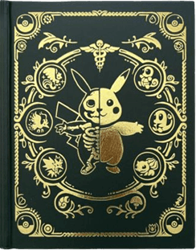
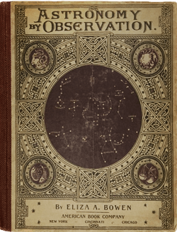
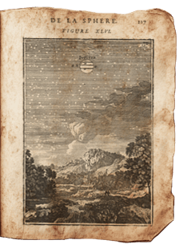
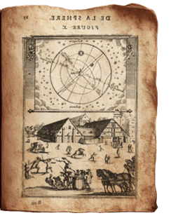

Click and drag to explore...
Credits
Many images obtained from snailspng and oldjewelryfeed on Tumblr.
Most images edited by me in some way.
Books
- Pokémon book cover: PokéNatomy by Christopher Stoll
- Pokémon book interior: After the Rain With You official novel
- "De La Sphere" illustrations by Allain Manesson Mallet, 17th century
Illustrations & Photography
- Insect illustrations by Daniel Carter Beard, 1915: "Leg Plan of the Baby" caterpillar, "cut-worms," caged beetle
- "Can I Kill That Fly?" illustration by Ivor Cutler for the International Times, Nov 1966
- Anthill illustration by snailspng from the British Library's manuscript collection
- Row of bugs painting by snighilarium
- Toad with human face from cover of Witchcraft in England
- Cygnus the Swan constellation from 1447 Italian manuscript
- Pair of night sky rooftop photos by Janja Sojka
Objects
- "Hey" bronze hand with face by Ken Little, 1996
- Blue and gold celestial shapes from mirror by atelier Mithe Espelt
- Medieval-style carved circle from 1950s-60s, sold on 1stDibs
- Cast iron owl incense burner from Japan, 1950s
- Folded hands gold daguerreotype pin from the 1850s, possibly abolitionist
- Glass eye by Jari Sheese, 2010
- Emerald salamander brooch from The Jewellery Editor, originally 16th-17th century
- Glass star pendant with lock by Raymond Roussel, 1923. Contains a star-shaped cookie.
- Gold ship pendant by Alfred André, late 19th century
- Coffin doily by CreativeWorksByAnnie (you can make one!)
Tapestries
- Large background tapestry from Belgium, 1920s, sold on 1stDibs
- Bird tree tapestry by WallTapestry.com based on an 1879 William Morris design
- Red tree tapestry by WallTapestry.com based on an 1879 William Morris design
Other
- Brown paper tape from HiClipart
My Images
Photos I took myself of objects I own. Free to use for non-commercial purposes. Credit appreciated but not required.- Koi fish charm
- Antique spoons
- Dark green stone orb
- Hedgehog salt shaker







